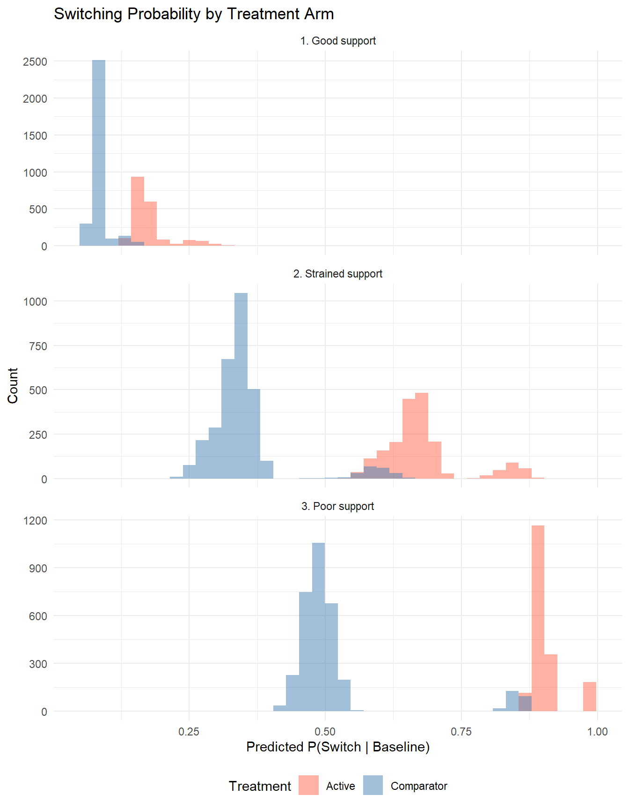

library(tidyverse)
library(survival)
library(here)
library(knitr)Estimand-Estimator Alignment in Time-to-Event Safety Analyses
A hepatitis B case study with longitudinal targeted learning
Estimand-Estimator Alignment in Time-to-Event Safety Analyses
Introduction
In post-marketing safety studies, the question “Does this drug increase the risk of adverse events?” cannot be answered without first specifying how intercurrent events—treatment switching, discontinuation, death from other causes—are handled. The ICH E9(R1) addendum formalises this requirement through the estimand framework: five elements (population, treatment, outcome, intercurrent events, and strategy) must be specified before analysis. Different strategies for handling the same intercurrent event define different estimands, and different estimands require compatible estimators.
This chapter examines whether conventional regression analyses succeed in estimating the stated estimand when treatment switching is present. We focus on two estimands—the treatment-policy and hypothetical no-switch strategies—because they most clearly illustrate the consequences of using a mismatched estimator. Three additional ICH E9(R1) strategies (while-on-treatment, composite, and principal stratum) are defined for context and included in the simulation, but receive less detailed treatment. A simulated hepatitis B safety study provides the running example throughout.
The analysis follows the causal roadmap for real-world evidence generation (Dang et al. 2023; Petersen 2014), which proceeds through defining the causal question, specifying a causal model, assessing identifiability, defining the statistical estimand, choosing an estimator, and conducting sensitivity analyses. This chapter concentrates on defining estimands, diagnosing empirical support, and comparing estimators.
source(here("DGP.R"))
source(here("R", "helpers.R"))
source(here("R", "support_diagnostics.R"))
cache_files <- c(
here("results", "lmtp_main.rds"),
here("results", "support_estimation.rds"),
here("results", "sim_study_main.rds"),
here("results", "sim_results", "ground_truth.rds")
)
missing <- cache_files[!file.exists(cache_files)]
if (length(missing) > 0) {
warning("Missing cached results. Run R/run_cached_analyses.R first:\n",
paste(" ", basename(missing), collapse = "\n"))
}The Hepatitis B Safety Example
We use a simulated post-marketing safety study comparing two hepatitis B antiviral regimens for the risk of renal failure. The setting draws on concerns about nephrotoxicity in tenofovir-containing regimens relative to entecavir-based alternatives.
The simulated cohort includes an active regimen (analogous to tenofovir) and a comparator (analogous to entecavir), with confounded treatment assignment driven by baseline CKD, cirrhosis, and age. The primary intercurrent event is informative treatment switching: patients on the active regimen who develop early renal signals may switch to the comparator. Because CKD drives both switching and renal failure, switching is informative—the patients who switch are those at greatest risk.
Baseline confounders include demographics (age, sex, race), comorbidities (CKD, diabetes, hypertension, cirrhosis, heart failure), and co-medications (NSAIDs, ACE/ARBs, statins). The outcome is time to renal failure observed over a 180-day risk window.
The Data-Generating Process
The function generate_hep_data() simulates the cohort. Key components are summarised in the table below.
| Component | Description |
|---|---|
| Treatment assignment | Active vs comparator, confounded by CKD, cirrhosis, age; nonlinear interactions when complexity=TRUE |
| Event process | Piecewise exponential hazard; HR = 1.25 before day 45 and HR = 0.70 after (non-proportional hazards) |
| Switching process | Hazard-based informative switching driven by treatment and CKD |
| Censoring | Dependent on baseline risk when dep_censor=TRUE; otherwise administrative only |
The policy argument controls how switching affects follow-up. Under "treatment_policy", switching occurs but does not censor—subjects are followed until the event or administrative censoring regardless of switching. Under "no_switch", switching is suppressed entirely, generating potential outcomes for the hypothetical world where nobody switches. Additional policies ("while_on_treatment", "composite", "principal_stratum") are available for the remaining estimands.
set.seed(2026)
dat <- generate_hep_data(
N = 10000,
np_hazard = TRUE,
dep_censor = TRUE,
complexity = TRUE,
policy = "treatment_policy",
seed = 2026
)| Quantity | Value |
|---|---|
| N | 1.000e+04 |
| Event rate | 7.630e-02 |
| Switch rate | 1.173e-01 |
| Switch rate (active + CKD) | 2.256e-01 |
| Switch rate (comparator) | 8.770e-02 |
| Median follow-up (days) | 6.270e+01 |
library(dagitty)
library(ggdag)
dag_safety <- dagify(
Treatment ~ W,
Switch ~ Treatment + W,
Censoring ~ Switch + W,
RenalFailure ~ Treatment + Switch + W,
exposure = "Treatment", outcome = "RenalFailure",
labels = c(W = "Baseline\nconfounders\n(CKD, age, ...)",
Treatment = "Treatment\n(active vs comparator)",
Switch = "Regimen\nswitch",
Censoring = "Censoring",
RenalFailure = "Renal\nfailure"),
coords = list(
x = c(W = 1, Treatment = 0, Switch = 1, Censoring = 2, RenalFailure = 1.5),
y = c(W = 1, Treatment = 0, Switch = 0, Censoring = 0, RenalFailure = -1)
)
)
ggdag(dag_safety, text = FALSE, use_labels = "label", text_size = 3) +
theme_dag()
Five Estimand Strategies
The ICH E9(R1) addendum defines five strategies for handling intercurrent events. In a safety study where treatment switching is the primary intercurrent event, each strategy answers a different clinical question.
Treatment-policy. What is the 180-day risk of renal failure comparing populations initiated on the active versus the comparator regimen, regardless of subsequent switching? The target parameter is \(\psi^{TP} = E[Y^{a=1}(180)] - E[Y^{a=0}(180)]\), where switching occurs naturally and is not intervened upon.
Hypothetical no-switch. What would the 180-day risk be if no patients switched? The target is \(\psi^{HYP} = E[Y^{a=1, \text{no switch}}(180)] - E[Y^{a=0, \text{no switch}}(180)]\). Identification requires modelling the time-varying confounders that drive both switching and the outcome.
While-on-treatment. What is the risk while patients remain on their assigned treatment? Follow-up is censored at switching, and the target conditions on not switching by 180 days. Naive estimation censors at switch time and assumes non-informative censoring; IPCW or LMTP can relax this assumption.
Composite. What is the risk of renal failure or switching (whichever comes first)? Switching is absorbed into the outcome, avoiding the need to model the switching mechanism. The trade-off is that the composite conflates tolerability with safety.
Principal stratum. What is the risk among patients who would not switch under either treatment? The target population is the latent “never-switcher” stratum, identified through joint potential switching indicators. Identification requires monotonicity or similar structural assumptions.
| Strategy | Handling | Key assumption | Trade-off |
|---|---|---|---|
| Treatment-policy | Ignore switching | None for switching | Includes post-switch outcomes |
| Hypothetical | Model world without switching | Correct switching model | Requires modelling switching mechanism |
| While-on-treatment | Censor at switch | Non-informative censoring (or IPCW) | Bias if switching is informative |
| Composite | Include switching in outcome | None for switching | Conflates switching and renal failure |
| Principal stratum | Restrict to never-switchers | Monotonicity | Targets a latent subpopulation |
Estimand-Estimator Alignment
For each estimand, multiple estimators are available—but not all of them estimate the quantity defined by the estimand. The table below summarises the correspondence.
alignment_tbl <- tibble::tribble(
~Estimand, ~Estimator, ~Aligned, ~`Reason for misalignment`,
"Treatment-policy", "LMTP SDR (static on/off)", "Yes",
"Targets marginal risk under baseline initiation; adjusts for censoring",
"Treatment-policy", "Cox naive (ignore switch)", "No",
"Conditional HR, not marginal RD; risk set altered by informative switching",
"Treatment-policy", "Cox censor-at-switch", "No",
"Removes high-risk subjects at switch; addresses a different estimand",
"Hypothetical no-switch", "LMTP SDR (no-switch intervention)", "Yes",
"Targets marginal risk without switching; adjusts for confounding",
"Hypothetical no-switch", "Cox censor-at-switch", "No",
"Assumes non-informative censoring; biased when switching is informative",
"While-on-treatment", "LMTP SDR (censor model for switch)", "Yes",
"Upweights patients who remain on treatment despite high switch propensity",
"While-on-treatment", "Cox censor-at-switch", "No",
"Non-informative censoring assumption violated",
"Composite", "Cox (composite outcome)", "Partial",
"HR for composite; conditional, not marginal",
"Principal stratum", "LMTP SDR (non-switchers)", "Approximate",
"Observed non-switchers are not the true principal stratum"
)
kable(alignment_tbl, format = "pipe")| Estimand | Estimator | Aligned | Reason for misalignment |
|---|---|---|---|
| Treatment-policy | LMTP SDR (static on/off) | Yes | Targets marginal risk under baseline initiation; adjusts for censoring |
| Treatment-policy | Cox naive (ignore switch) | No | Conditional HR, not marginal RD; risk set altered by informative switching |
| Treatment-policy | Cox censor-at-switch | No | Removes high-risk subjects at switch; addresses a different estimand |
| Hypothetical no-switch | LMTP SDR (no-switch intervention) | Yes | Targets marginal risk without switching; adjusts for confounding |
| Hypothetical no-switch | Cox censor-at-switch | No | Assumes non-informative censoring; biased when switching is informative |
| While-on-treatment | LMTP SDR (censor model for switch) | Yes | Upweights patients who remain on treatment despite high switch propensity |
| While-on-treatment | Cox censor-at-switch | No | Non-informative censoring assumption violated |
| Composite | Cox (composite outcome) | Partial | HR for composite; conditional, not marginal |
| Principal stratum | LMTP SDR (non-switchers) | Approximate | Observed non-switchers are not the true principal stratum |
When switching is informative, censoring at switch removes the highest-risk person-time from the active arm, attenuating the apparent treatment effect. The naive Cox model includes post-switch outcomes that may reflect the comparator rather than the active treatment. Neither approach targets the marginal risk contrast defined by the estimand. The LMTP sequentially doubly robust estimator addresses this by modelling the joint distribution of treatment, censoring, and outcome over time and integrating over confounders to produce marginal risk estimates.
Conventional Regression Analyses
tau <- 180
cox_naive <- fit_cox_naive(dat, tau = tau,
covars = c("age", "ckd", "cirrhosis",
"diabetes", "heart_failure"))cox_cs <- fit_cox_censor_switch(dat, tau = tau,
covars = c("age", "ckd", "cirrhosis",
"diabetes", "heart_failure"))cox_td <- fit_cox_td(dat, tau = tau,
covars = c("age", "ckd", "cirrhosis",
"diabetes", "heart_failure"))km_naive <- km_risk_at(cox_naive$survfit, t = tau)
km_cs <- km_risk_at(cox_cs$survfit, t = tau)| Method | HR | HR 95% CI | KM Risk Difference |
|---|---|---|---|
| Naive Cox (ignore switch) | 1.196 | 1.023–1.398 | 0.078 |
| Cox censor at switch | 1.179 | 1–1.39 | 0.070 |
| Cox time-dependent treatment | 1.155 | 0.99–1.347 | NA |
The naive Cox model uses only baseline treatment and ignores switching. Under non-proportional hazards, the resulting HR is a weighted average of time-varying hazard ratios with no clear marginal interpretation. Censoring at switch assumes non-informative censoring conditional on included covariates—an assumption violated when CKD drives both switching and the outcome. The time-dependent Cox model includes current treatment as a covariate, which estimates a conditional HR for current exposure, not the marginal risk contrast under a target intervention.
The unadjusted Kaplan-Meier risk differences reported above serve only as descriptive benchmarks.
Limitations of the hazard ratio as a causal parameter
The Cox HR is problematic as an effect measure even in randomised trials. At later time points, differential event rates deplete high-risk subjects faster in one arm, so the groups being compared are no longer exchangeable (Stensrud et al. 2019). The individual-level causal HR requires the untestable assumption that counterfactual survival times are conditionally independent (Martinussen 2022). Under non-proportional hazards, the Cox HR additionally depends on the censoring distribution (Rufibach 2018). Survival-function contrasts—risk differences, risk ratios, and restricted mean survival time—avoid these difficulties.
Estimation with LMTP
The lmtp package implements longitudinal modified treatment policies via the sequentially doubly robust (SDR) estimator. It targets a marginal risk under a specified intervention, adjusts for time-varying confounding, and provides doubly robust inference: the estimate is consistent if either the outcome model or the treatment/censoring model is correctly specified.
lmtp_prep <- prepare_lmtp_data(
dat, tau = tau, bin_width = 14,
baseline = c("age", "sex_male", "ckd", "diabetes", "hypertension",
"heart_failure")
)We estimate marginal 180-day risks under static interventions: set \(A = 1\) (active) or \(A = 0\) (comparator) for all subjects. Follow-up is discretised into biweekly bins (13 time points).
lmtp_cache <- here("results", "lmtp_main.rds")
stopifnot("Run R/run_cached_analyses.R first" = file.exists(lmtp_cache))
lmtp_res <- readRDS(lmtp_cache)
rd <- lmtp_res$contrast_rd$estimates
rr <- lmtp_res$contrast_rr$estimates| Quantity | Estimate | 95% CI |
|---|---|---|
| Risk difference | -0.01589 | -0.03944 to 0.00766 |
| Risk ratio | 0.98160 | 0.9546 to 1.0087 |
The Cox HR and the LMTP risk difference are not comparable as competing answers to the same question—they estimate different parameters on different scales. The concern is not which number is larger, but whether the estimator produces the quantity defined by the estimand.
Specification notes
The current analysis uses SL.mean, SL.glm, and SL.bayesglm with 2-fold cross-validation. For production analyses, the Super Learner library should include at minimum a parametric model, a penalised regression, and one flexible learner (Gruber et al. 2022). The number of CV folds should be calibrated to the effective sample size. The SDR estimator respects model bounds (survival probabilities remain in \([0,1]\)), an advantage over inverse-probability weighting in sparse data.
Known Truth from the DGP
Because we control the data-generating process, we can compute true marginal risks by generating large counterfactual datasets (500,000 subjects each under all-treated and all-control, with no dependent censoring).
truth_cache <- here("results", "sim_results", "ground_truth.rds")
stopifnot("Run R/run_cached_analyses.R first" = file.exists(truth_cache))
truth_all <- readRDS(truth_cache)
truth_summary <- tibble::tibble(
Estimand = c("Treatment-policy", "Hypothetical no-switch",
"While-on-treatment", "Composite", "Principal stratum"),
`Risk (active)` = c(truth_all$treatment_policy$true_risk_1,
truth_all$no_switch$true_risk_1,
truth_all$while_on_treatment$true_risk_1,
truth_all$composite$true_risk_1,
truth_all$principal_stratum$true_risk_1),
`Risk (comparator)` = c(truth_all$treatment_policy$true_risk_0,
truth_all$no_switch$true_risk_0,
truth_all$while_on_treatment$true_risk_0,
truth_all$composite$true_risk_0,
truth_all$principal_stratum$true_risk_0),
RD = c(truth_all$treatment_policy$true_rd,
truth_all$no_switch$true_rd,
truth_all$while_on_treatment$true_rd,
truth_all$composite$true_rd,
truth_all$principal_stratum$true_rd),
RR = c(truth_all$treatment_policy$true_rr,
truth_all$no_switch$true_rr,
truth_all$while_on_treatment$true_rr,
truth_all$composite$true_rr,
truth_all$principal_stratum$true_rr),
HR = c(truth_all$treatment_policy$true_hr,
truth_all$no_switch$true_hr,
truth_all$while_on_treatment$true_hr,
truth_all$composite$true_hr,
truth_all$principal_stratum$true_hr)
)
kable(truth_summary, digits = 5, format = "pipe",
caption = "True 180-day risks by estimand (N = 500,000 per arm)")| Estimand | Risk (active) | Risk (comparator) | RD | RR | HR |
|---|---|---|---|---|---|
| Treatment-policy | 0.14220 | 0.13541 | 0.00679 | 1.05013 | 1.06159 |
| Hypothetical no-switch | 0.13509 | 0.13555 | -0.00045 | 0.99665 | 1.00583 |
| While-on-treatment | 0.13509 | 0.13555 | -0.00045 | 0.99665 | 1.00583 |
| Composite | 0.43189 | 0.28488 | 0.14701 | 1.51602 | 1.69547 |
| Principal stratum | 0.13054 | 0.13063 | -0.00009 | 0.99928 | 1.00840 |
Why the estimands differ
The risk difference ranges from near zero to over 14 percentage points across the five strategies. This variation reflects genuinely different causal questions about the same drug, not a statistical artifact.
Under the treatment-policy strategy, the active drug increases risk (RD > 0) because patients are followed regardless of switching. During the early period (HR = 1.25 before day 45), the active drug causes excess harm. Some patients subsequently switch to the comparator, reducing their later hazard, but the early harm has already accumulated.
Under the hypothetical no-switch strategy, the risk difference is approximately zero. Without switching, the early harm (HR = 1.25) is offset by the late protective effect (HR = 0.70) over the full 180-day window. The while-on-treatment truth is numerically identical because, under counterfactual all-treated or all-control conditions, nobody switches.
The composite estimand produces the largest risk difference because the active drug causes substantially more switching. The composite event rate in the active arm is driven primarily by differential switching rates, not differential renal failure.
Among the approximately 19% of patients who constitute the principal stratum (never-switchers under either treatment), the risk difference is near zero. These patients tend to be lower-risk (without CKD), for whom the treatment effect is small.
Data Support Diagnostics
Even when a causal estimand is well-defined and identifiable in principle, estimation can fail if the data lack empirical support. Positivity requires that, within every stratum of measured confounders, there is a nonzero probability of receiving each treatment and of not being censored. In longitudinal settings, sequential positivity requires that the cumulative product of treatment and censoring probabilities remains bounded away from zero across all time points (Gruber et al. 2022).
We examine three scenarios that vary switching intensity while holding the treatment assignment mechanism fixed.
set.seed(101)
dat_good <- generate_hep_data(
N = 5000, np_hazard = TRUE, dep_censor = TRUE,
complexity = TRUE, policy = "treatment_policy", seed = 101
)
set.seed(102)
dat_strained <- generate_hep_data(
N = 5000, np_hazard = TRUE, dep_censor = TRUE,
complexity = TRUE, policy = "treatment_policy",
gamma_A = 1.5, gamma_ckd = 1.2, lambda_sw0 = 5e-3,
seed = 102
)
set.seed(103)
dat_poor <- generate_hep_data(
N = 5000, np_hazard = TRUE, dep_censor = TRUE,
complexity = TRUE, policy = "treatment_policy",
gamma_A = 2.5, gamma_ckd = 2.0, lambda_sw0 = 1e-2,
seed = 103
)Because treatment assignment parameters are held constant, treatment propensity scores are identical across scenarios. The relevant diagnostic is the distribution of predicted switching probabilities.
scenario_list <- list(
"1. Good support" = dat_good,
"2. Strained support" = dat_strained,
"3. Poor support" = dat_poor
)
support_plots <- plot_support_scenarios(scenario_list)
support_plots$by_treatment
support_plots$by_ckd
support_tbl <- bind_rows(
summarize_support(dat_good, "Good support"),
summarize_support(dat_strained, "Strained support"),
summarize_support(dat_poor, "Poor support")
)
kable(support_tbl, digits = 3, format = "pipe")| scenario | n | switch_rate | ps_near_0 | ps_near_1 | ps_violation | p_switch_ckd | p_switch_nockd | natural_sof_nosw | natural_nonsof_nosw |
|---|---|---|---|---|---|---|---|---|---|
| Good support | 5000 | 0.119 | 0 | 0 | 0 | 0.198 | 0.112 | 0.315 | 0.566 |
| Strained support | 5000 | 0.472 | 0 | 0 | 0 | 0.718 | 0.450 | 0.123 | 0.405 |
| Poor support | 5000 | 0.655 | 0 | 0 | 0 | 0.907 | 0.631 | 0.035 | 0.310 |
support_cache <- here("results", "support_estimation.rds")
stopifnot("Run R/run_cached_analyses.R first" = file.exists(support_cache))
support_results <- readRDS(support_cache)
kable(support_results, digits = 4, format = "pipe",
caption = "Estimation results across support scenarios")| Scenario | Cox naive HR | Cox censor HR | LMTP RD |
|---|---|---|---|
| Good support | 1.1473 | 1.1607 | -0.0212 |
| Strained support | 1.1805 | 1.1997 | -0.0343 |
| Poor support | 1.3887 | 2.2729 | -0.0575 |
Under good support (~12% switching), the three estimators produce stable estimates. As switching intensifies, the censor-at-switch Cox HR diverges from the naive HR (2.27 vs 1.39 under poor support), because censoring removes a large, non-random fraction of the active arm. LMTP estimates show increasing bias and wider confidence intervals as the censoring model must extrapolate into regions with limited data.
Identification versus estimation
A well-defined, identifiable estimand does not guarantee reliable estimation. If few subjects in certain strata follow the target intervention, support diagnostics should be examined before interpreting any estimate.
Repeated Simulation Study
We assess estimator performance over 20 repeated samples (N = 10,000 each) from the DGP, across all five estimands. For each iteration, we fit Cox naive, Cox censor-at-switch, and LMTP SDR, and compare the resulting risk differences and hazard ratios to the known truth.
source(here("R", "run_simulations.R"))
sim_cache <- here("results", "sim_study_main.rds")
stopifnot("Run R/run_cached_analyses.R first" = file.exists(sim_cache))
sim_results <- readRDS(sim_cache)estimand_labels <- c(
treatment_policy = "Treatment-policy",
no_switch = "Hypothetical no-switch",
while_on_treatment = "While-on-treatment",
composite = "Composite",
principal_stratum = "Principal stratum"
)
sim_summaries <- lapply(names(truth_all), function(est) {
if (!est %in% sim_results$estimand) return(NULL)
sub <- sim_results %>% filter(estimand == est)
s <- summarize_simulation(sub,
truth_rd = truth_all[[est]]$true_rd,
truth_rr = truth_all[[est]]$true_rr,
truth_hr = truth_all[[est]]$true_hr)
s$estimand_label <- estimand_labels[est]
s
}) %>% bind_rows()
# Clean table: replace NaN with NA for display
sim_display <- sim_summaries %>%
select(estimand_label, method, n_converged,
mean_hr, bias_hr, mean_rd, bias_rd,
mean_rr, bias_rr, coverage_rd) %>%
rename(Estimand = estimand_label, Method = method) %>%
mutate(across(where(is.numeric), ~ ifelse(is.nan(.), NA, .)))
kable(sim_display, digits = 4, format = "pipe")| Estimand | Method | n_converged | mean_hr | bias_hr | mean_rd | bias_rd | mean_rr | bias_rr | coverage_rd |
|---|---|---|---|---|---|---|---|---|---|
| Treatment-policy | Cox censor-at-switch | 20 | 1.1926 | 0.1310 | 0.0764 | 0.0696 | 1.7543 | 0.7042 | 0.00 |
| Treatment-policy | Cox naive | 20 | 1.2063 | 0.1447 | 0.0859 | 0.0791 | 1.8502 | 0.8001 | 0.00 |
| Treatment-policy | LMTP SDR | 20 | NA | NA | -0.0207 | -0.0275 | 0.9762 | -0.0740 | 0.35 |
| Hypothetical no-switch | Cox censor-at-switch | 20 | 1.1919 | 0.1861 | 0.0803 | 0.0807 | 1.8004 | 0.8037 | 0.00 |
| Hypothetical no-switch | Cox naive | 20 | 1.1919 | 0.1861 | 0.0803 | 0.0807 | 1.8004 | 0.8037 | 0.00 |
| Hypothetical no-switch | LMTP SDR | 20 | NA | NA | -0.0145 | -0.0140 | 0.9834 | -0.0133 | 0.75 |
| While-on-treatment | Cox censor-at-switch | 20 | 1.1926 | 0.1868 | 0.0764 | 0.0769 | 1.7543 | 0.7577 | 0.00 |
| While-on-treatment | Cox naive | 20 | 1.1926 | 0.1868 | 0.0764 | 0.0769 | 1.7543 | 0.7577 | 0.00 |
| While-on-treatment | LMTP SDR | 20 | NA | NA | -0.0147 | -0.0143 | 0.9831 | -0.0136 | 0.85 |
| Composite | Cox censor-at-switch | 20 | 1.7947 | 0.0993 | 0.2068 | 0.0598 | 1.8097 | 0.2937 | 0.00 |
| Composite | Cox naive | 20 | 1.7947 | 0.0993 | 0.2068 | 0.0598 | 1.8097 | 0.2937 | 0.00 |
| Composite | LMTP SDR | 20 | NA | NA | -0.1624 | -0.3094 | 0.7707 | -0.7453 | 0.00 |
| Principal stratum | Cox censor-at-switch | 20 | 1.1926 | 0.1842 | 0.0764 | 0.0765 | 1.7543 | 0.7550 | 0.00 |
| Principal stratum | Cox naive | 20 | 1.2063 | 0.1979 | 0.0859 | 0.0860 | 1.8502 | 0.8509 | 0.00 |
| Principal stratum | LMTP SDR (non-switchers) | 20 | NA | NA | -0.0261 | -0.0261 | 0.9695 | -0.0298 | 0.55 |
# Plot only risk differences (not HRs) for clarity
sim_plot_rd <- sim_results %>%
filter(converged, !is.na(risk_diff)) %>%
mutate(estimand_label = estimand_labels[estimand])
truth_lines <- tibble(
estimand_label = unname(estimand_labels[names(truth_all)]),
xint = sapply(truth_all, function(x) x$true_rd)
)
ggplot(sim_plot_rd, aes(x = risk_diff, fill = method)) +
geom_histogram(alpha = 0.6, bins = 20, position = "identity") +
facet_wrap(~ estimand_label, scales = "free", ncol = 2) +
geom_vline(data = truth_lines,
aes(xintercept = xint), linetype = "dashed", color = "red") +
labs(x = "Risk Difference", y = "Count", fill = "Method") +
theme_minimal(base_size = 11) +
theme(legend.position = "bottom")
Interpretation
Across all five estimands, the unadjusted Cox hazard ratios and Kaplan-Meier risk differences are substantially biased, with 0% coverage in every case. CKD confounds both treatment assignment and the outcome; the resulting bias inflates the apparent treatment effect by roughly an order of magnitude relative to the true risk difference for the non-composite estimands.
The Cox naive and censor-at-switch estimators differ under the treatment-policy estimand (mean HR 1.21 vs 1.19), confirming that censoring at switch attenuates the estimate by selectively removing high-risk person-time. Under no-switch data, the two are identical, as expected.
LMTP produces less biased estimates for most estimands. For the no-switch and while-on-treatment estimands (near-null true effects), coverage reaches 75–85%. For the treatment-policy estimand (true RD = +0.007), coverage is lower at 35%, reflecting a residual negative bias of approximately -0.03 that likely arises from the combination of biweekly time bins, a limited Super Learner library, and a sparse event rate (~8%).
The composite LMTP estimate is severely biased (mean RD = -0.16 vs truth = +0.15). This is a specification error, not a failure of the LMTP framework: the static-intervention analysis adjusts away switching through its censoring model, which is the opposite of what the composite estimand requires (switching should be counted as an event, not modelled as censoring). The LMTP analysis restricted to observed non-switchers provides a rough approximation of the principal stratum (55% coverage), though the approximation is imperfect because observed non-switchers are not the same as the latent never-switcher stratum.
Sensitivity to Unmeasured Confounding
Even with a well-specified estimator and adequate support, causal interpretation requires no unmeasured confounding. The causal gap \(\delta = \psi_{\text{stat}} - \psi_{\text{causal}}\) quantifies residual confounding from unmeasured common causes. The G-value (Gruber et al. 2024)—the minimum causal gap needed to shift the confidence interval to include the null—provides a useful sensitivity diagnostic. If the G-value is large relative to the measured confounding adjustment, the finding is robust; if small, modest unmeasured confounding could nullify the result.
This tutorial does not implement a full sensitivity analysis.
Summary
Three observations emerge from this simulation study. First, conventional Cox regression analyses—whether ignoring switching, censoring at switch, or including time-dependent treatment—produce biased estimates of every estimand examined here, primarily because of uncontrolled confounding. Second, LMTP substantially reduces this bias for estimands that match its intervention specification (treatment-policy, hypothetical no-switch, while-on-treatment), but residual bias remains under the current specification. Third, the same drug yields markedly different risk differences depending on how switching is handled—from near zero (hypothetical, principal stratum) to +0.15 (composite)—and the choice of estimand strategy should be driven by the clinical question, not by computational convenience.
These results also highlight two limitations. LMTP performance depends on the temporal resolution of time bins and the flexibility of the Super Learner library; the biweekly bins and minimal learner set used here are likely insufficient for production analyses. And when the intervention specification does not match the estimand (as with the composite), even a well-designed estimator framework produces wrong answers. Transparent reporting of estimand, assumptions, diagnostics, and estimator specification is essential.
References
- ICH E9(R1) Addendum (2019). Addendum on estimands and sensitivity analyses in clinical trials.
- Williams N, Diaz I (2023). lmtp: Non-parametric causal effects of feasible interventions based on modified treatment policies. R package.
- van der Laan MJ, Rose S (2011). Targeted Learning. Springer.
- Hernan MA, Robins JM (2020). Causal Inference: What If. Chapman & Hall.
- Dang LE, Tarp JM, Abrahamsen B, et al. (2023). A causal roadmap for generating high-quality real-world evidence. J Clin Transl Sci.
- Gruber S, Lee H, Phillips R, Ho M, van der Laan MJ (2022). Developing a targeted learning-based statistical analysis plan. Stat Biopharm Res.
- Gruber S, Phillips RV, Lee H, van der Laan MJ (2024). Targeted learning: toward a future informed by real-world evidence. Stat Biopharm Res.
- Chen RC, Rosenblum M, van der Laan MJ, Gruber S (2023). Beyond the Cox hazard ratio. Clinical Trials.
- Martinussen T (2022). Causality and the Cox regression model. Annu Rev Stat Appl.
- Stensrud MJ, Aalen JM, Aalen OO, Valberg M (2019). Limitations of hazard ratios in clinical trials. Eur Heart J.
- Rufibach K (2019). Treatment effect quantification for time-to-event endpoints. Pharm Stat.
- Petersen ML (2014). Applying a causal road map in settings with time-dependent confounding. Epidemiology.